Limited Job Opportunities
Not enough accessible entry-level work and pathways into employment.
Exploring youth unemployment in Dandora, Nairobi, and developing practical ideas that connect young people with skills, jobs, entrepreneurship and a brighter future.
Ideas. Empowerment. Opportunity.
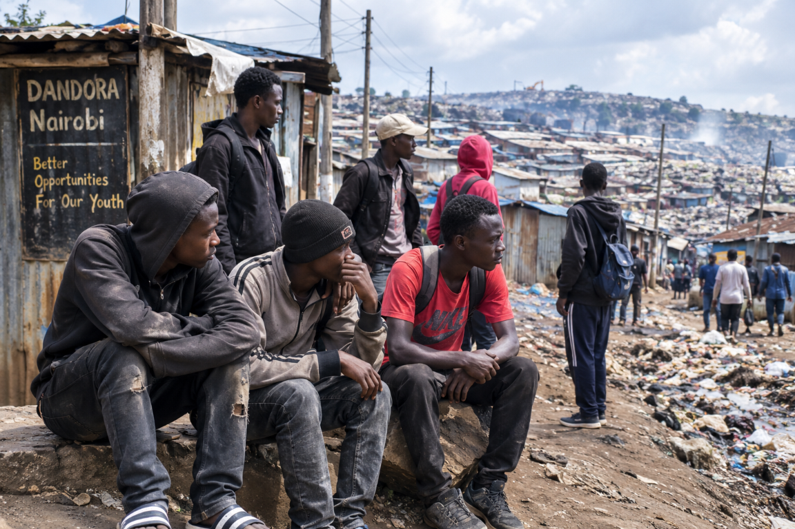
Opportunity Dandora is a community-focused project exploring unemployment among young people in Dandora, Nairobi.
The project looks at challenges that can make it difficult for young people to access employment, practical training and opportunities to start businesses.
It brings community ideas together to explore possible solutions and pathways forward.
Explore the Solutions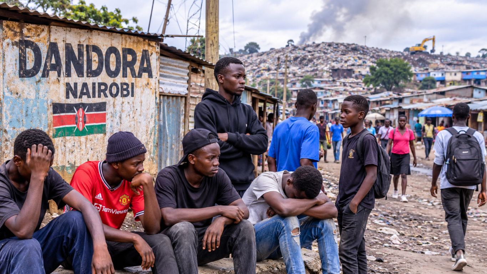
The project explores barriers that can affect access to decent work and skills development in the community.
Not enough accessible entry-level work and pathways into employment.
Some young people may not have access to practical or in-demand training.
It can be difficult to get a first opportunity without previous experience.
New entrepreneurs may need guidance, networks, equipment or finance.
These are project areas the community can work together to address.
Ideas to explore with young people, training providers, employers and community partners.
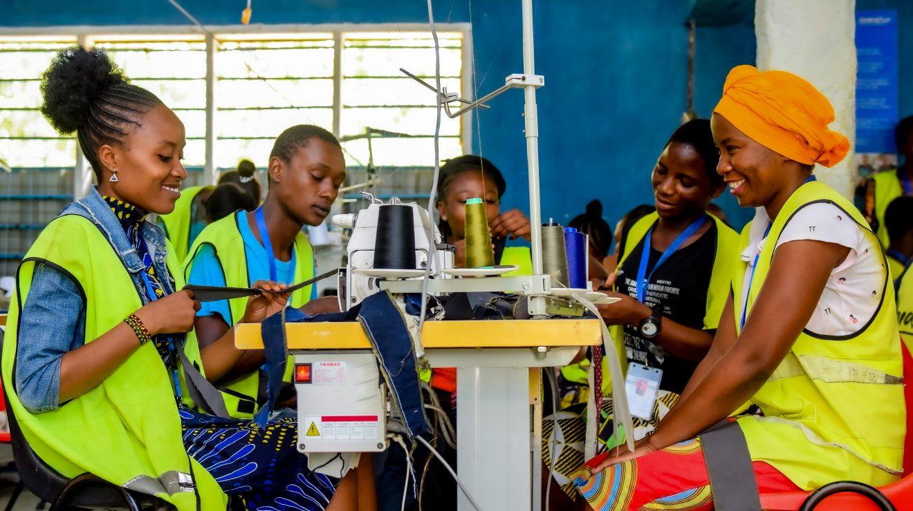
01Connect young people with practical, vocational, technical and digital skills training.
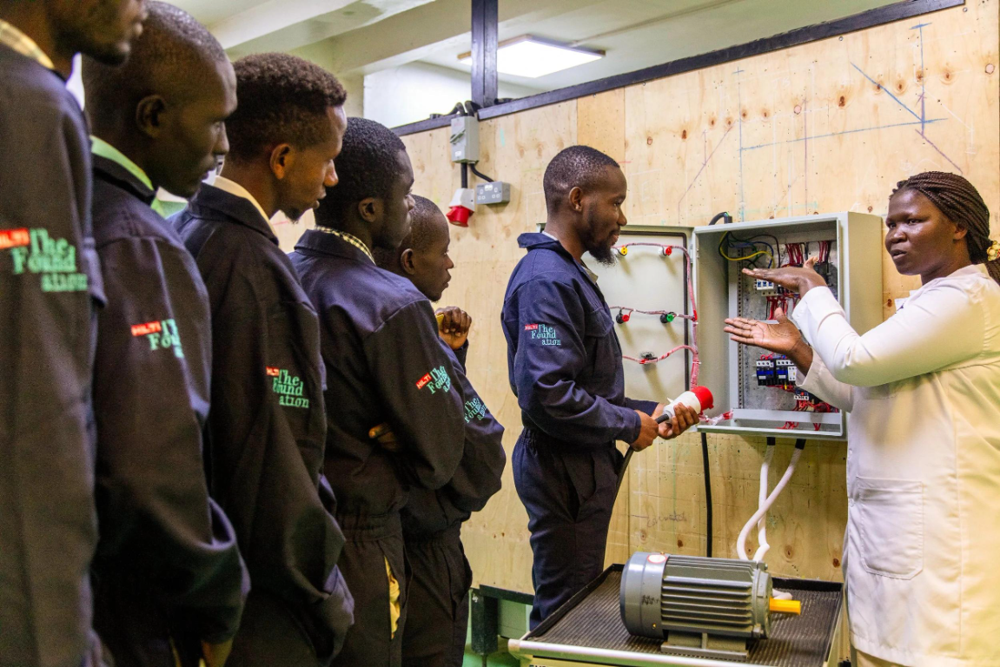
02Build links with workshops and employers for supervised work experience and fair stipends where possible.
Offer mentoring, business planning, bookkeeping guidance and referrals to suitable support.
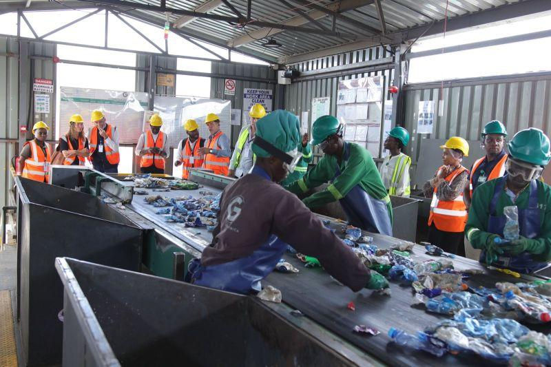
04Explore safe community recycling initiatives with appropriate training and licensed partners.
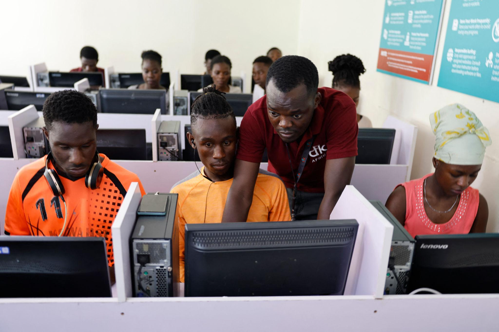
05Support CV writing, interview preparation, verified vacancies and employer connections.
Introduce computer literacy, web skills, design, digital marketing and online safety.
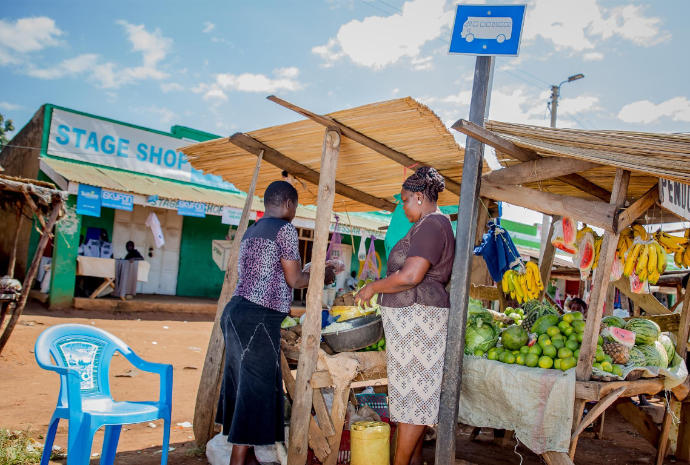
07Help local small businesses improve marketing and record keeping while exploring entry-level roles.
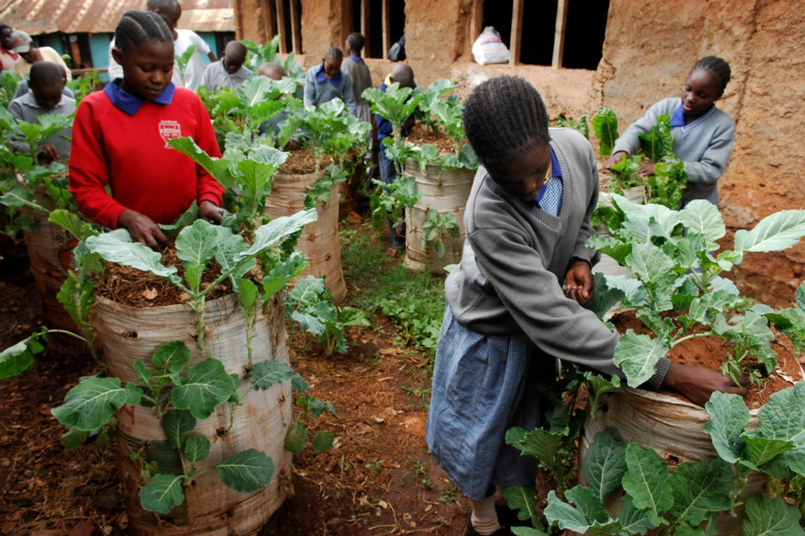
08Explore small-space food growing, practical training and links to local markets.
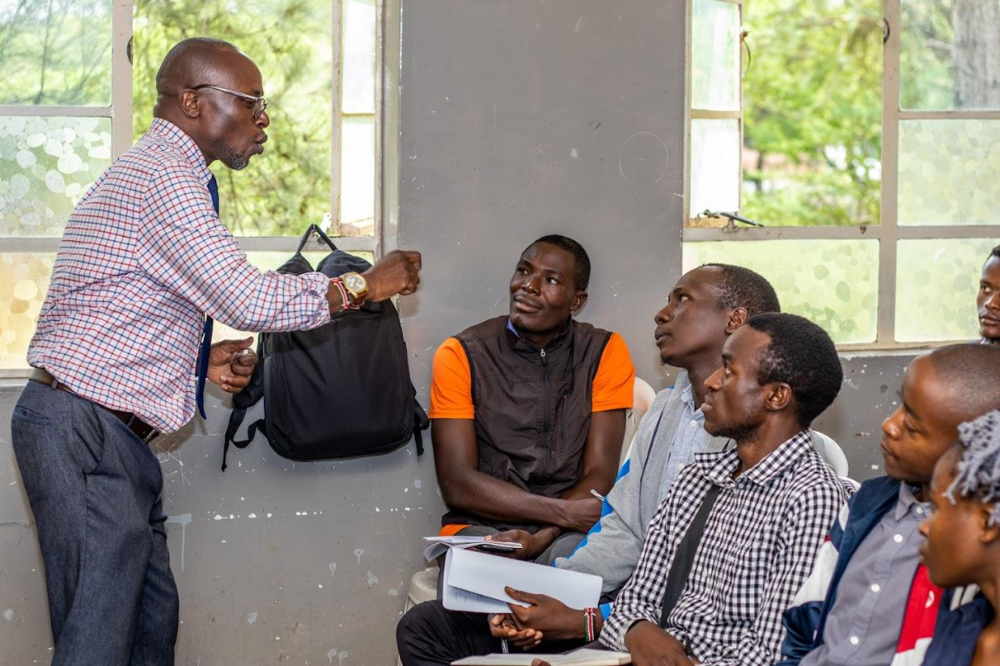
09Connect young people with career talks, mentors, CV support and interview practice.
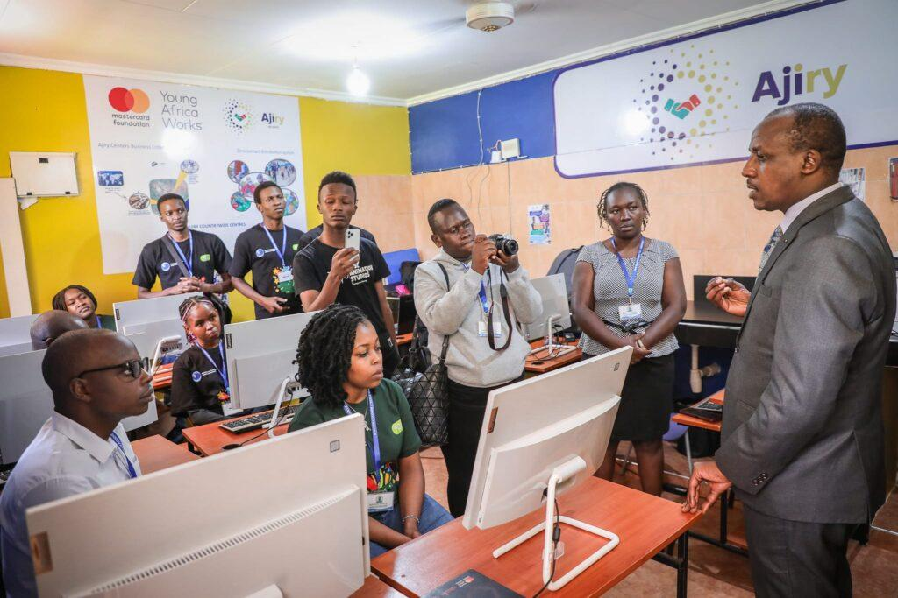
10Guide eligible young people towards verified training, enterprise and public support programmes.
Tell us which skills you would like to learn. Your response can help the project understand the training interests of young people in Dandora.
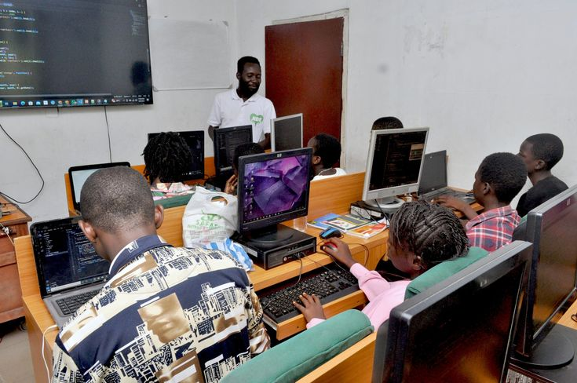
Explore these platforms for jobs, training and career information.
Search for job opportunities.
Explore digital work skills and training.
Find information about accredited TVET institutions.
Explore jobs and professional connections.
Learn about youth enterprise support.
Check each organisation's current eligibility rules, fees and application details directly before applying. This website does not guarantee jobs, training places or funding.
For questions about skills training and opportunities in Dandora, get in touch by email.
Email Opportunity Dandora